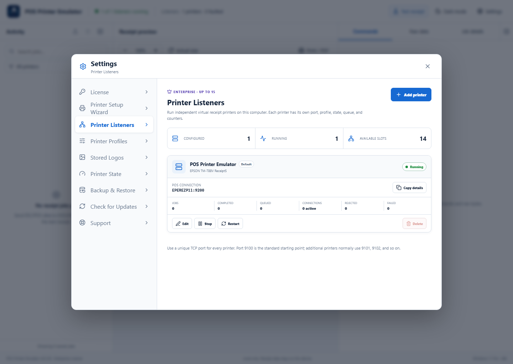
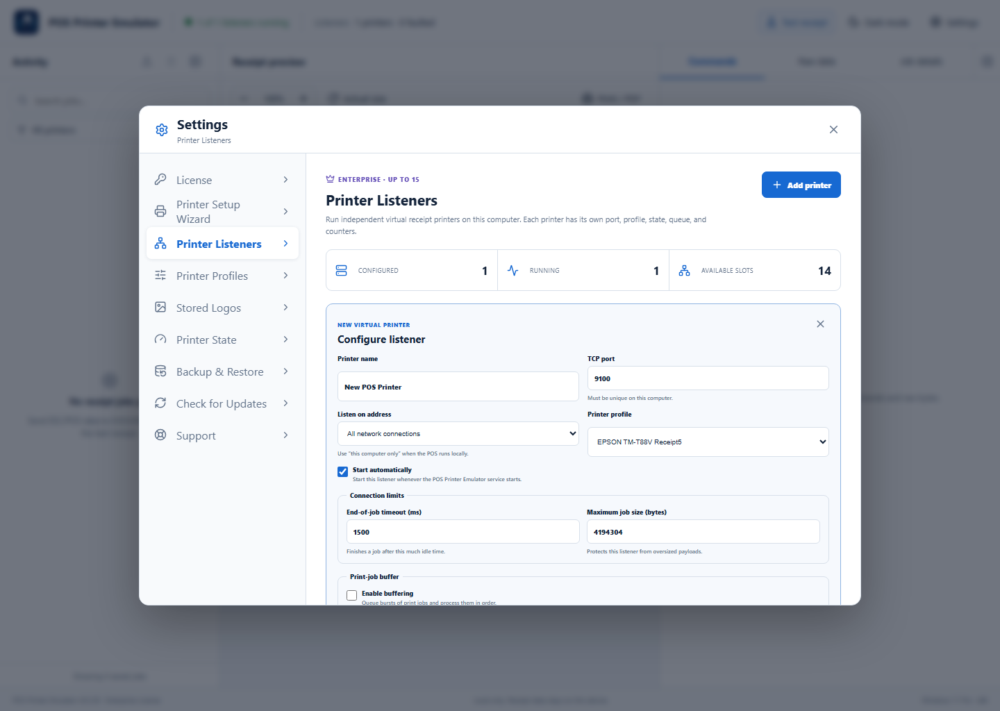

License limits: Lite supports one listener, Pro supports up to two, and Enterprise supports up to 15. Additional-listener management is available with Pro and Enterprise.
1Review configured listeners
Open Settings → Printer Listeners. Review configured, running, and available counts. Each card shows the POS connection, selected profile, job counters, connection activity, and errors.

2Add or edit a listener
Select Add printer. Enter a name, choose a unique TCP port, select This computer only for a local POS or All network connections for another computer, and choose a Printer Profile. Keep Start automatically enabled for normal use.

3Manage and monitor the printer
Use Copy details to copy the RAW TCP address for POS configuration. Use Edit, Start, Stop, or Restart as needed. The default listener cannot be deleted.
Recommended configuration
- Use a descriptive printer name such as “Front Counter” or “Kitchen”.
- Never assign the same TCP port to two listeners.
- Use
127.0.0.1only when POS software runs on the emulator computer. - Enable buffering only when short bursts of jobs need to wait in order.